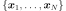
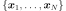
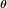
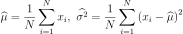

Maximum Likelihood Principle¶
This method deals with the parametric modeling of a probability
distribution for a random vector
 . The appropriate
probability distribution is found by using a sample of data
. Such an approach
can be described in two steps as follows:
. The appropriate
probability distribution is found by using a sample of data
. Such an approach
can be described in two steps as follows:
Choose a probability distribution (e.g. the Normal distribution, or any other distribution available),
Find the parameter values  that characterize the probability distribution (e.g. the mean and standard deviation for the Normal distribution) which best describes the sample .
The maximum likelihood method is used for the second step.
This method is restricted to the
case where  and continuous probability distributions.
Please note therefore that
and continuous probability distributions.
Please note therefore that  in the following
text. The maximum likelihood estimate (MLE) of is
defined as the value of which maximizes the
likelihood function :
in the following
text. The maximum likelihood estimate (MLE) of is
defined as the value of which maximizes the
likelihood function :
Given that  is a sample of
independent identically distributed (i.i.d) observations,
is a sample of
independent identically distributed (i.i.d) observations,
 represents the
probability of observing such a sample assuming that they are taken from
a probability distribution with parameters . In
concrete terms, the likelihood
is calculated as
follows:
represents the
probability of observing such a sample assuming that they are taken from
a probability distribution with parameters . In
concrete terms, the likelihood
is calculated as
follows:
if the distribution is continuous, with density .
For example, if we suppose that  is a Gaussian distribution
with parameters (i.e. the mean
and standard deviation),
is a Gaussian distribution
with parameters (i.e. the mean
and standard deviation),
The following figure graphically illustrates the maximum likelihood method, in the particular case of a Gaussian probability distribution.
(Source code, png, hires.png, pdf)
{kind=link}
{kind=link}
In general, in order to maximize the likelihood function classical optimization algorithms (e.g. gradient type) can be used. The Gaussian distribution case is an exception to this, as the maximum likelihood estimators are obtained analytically:

API:
Examples:
References: